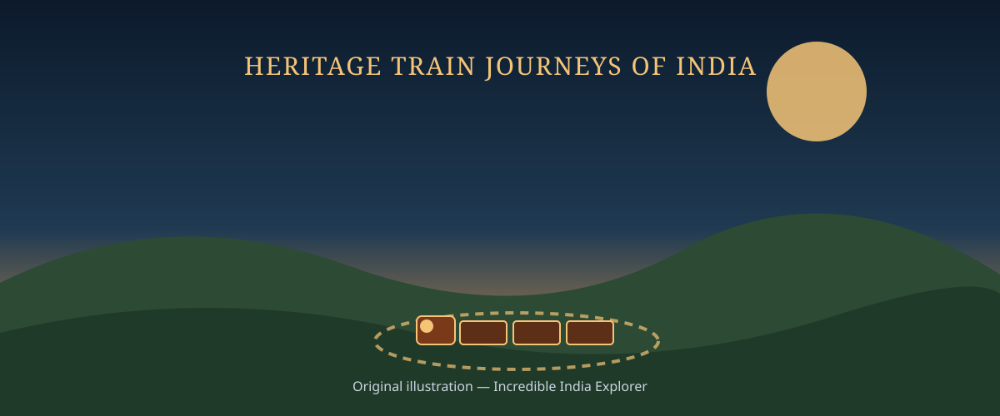
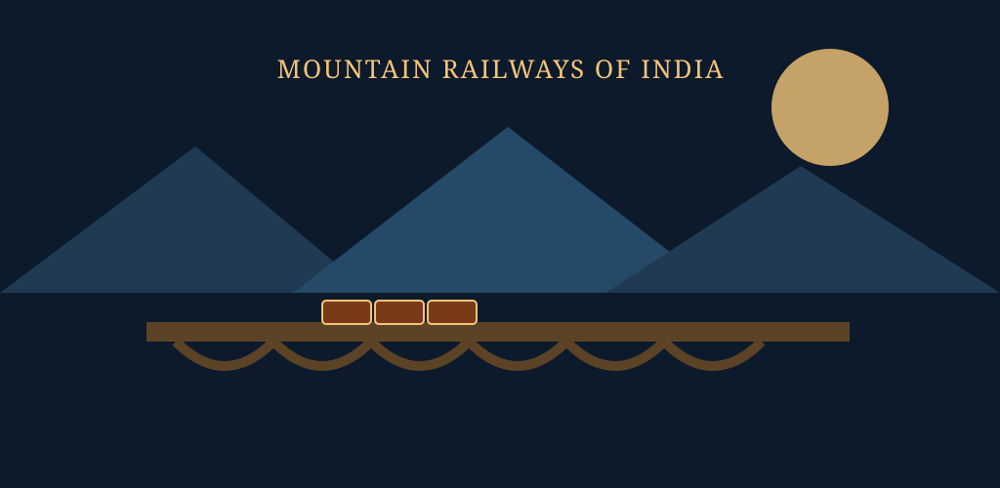
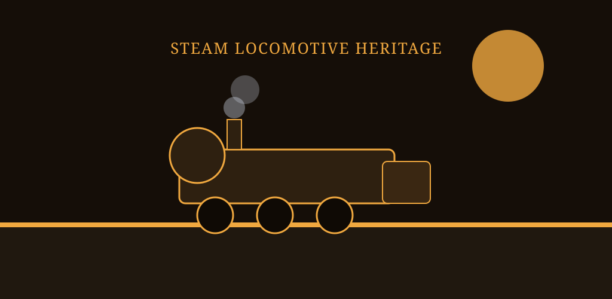
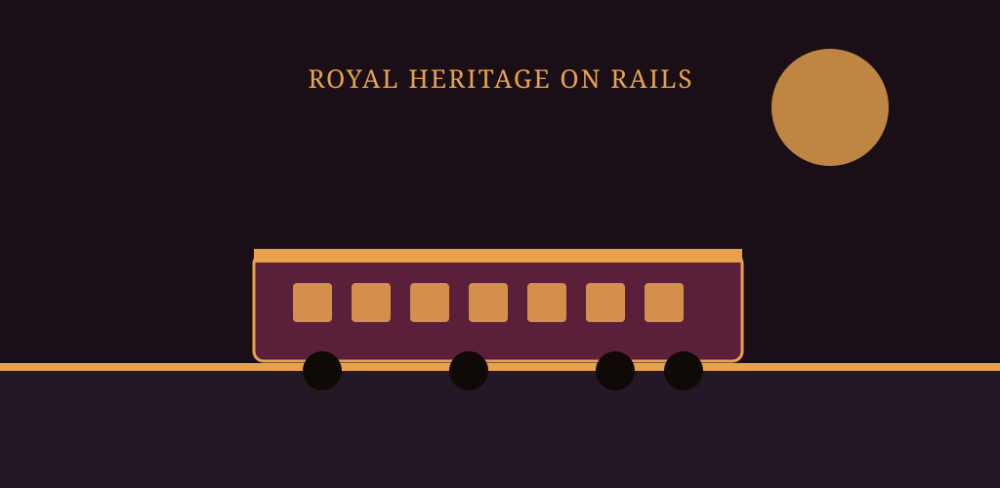

TRAINS OF INDIA
Heritage Train Journeys of India
From UNESCO-listed mountain railways to the world's oldest working steam locomotive — explore the journeys that carry India's railway history into the present.
Browse Heritage Journeys
Filter by category, region, or historical significance — or search by name.
No heritage journeys match your filters. Try clearing a filter or searching a different term.
A Timeline of Railway Heritage
Major milestones from the 1850s to UNESCO recognition.
Heritage Facts
Gallery
Illustrated scenes from India's heritage railway journeys.



